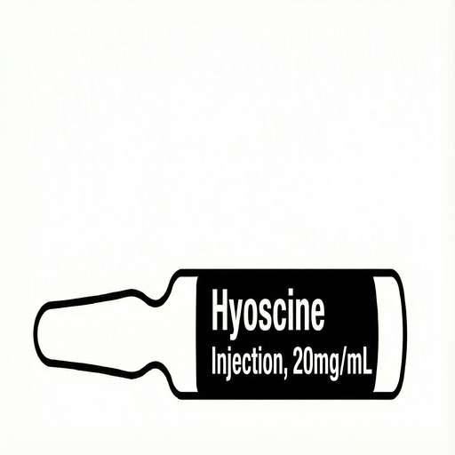
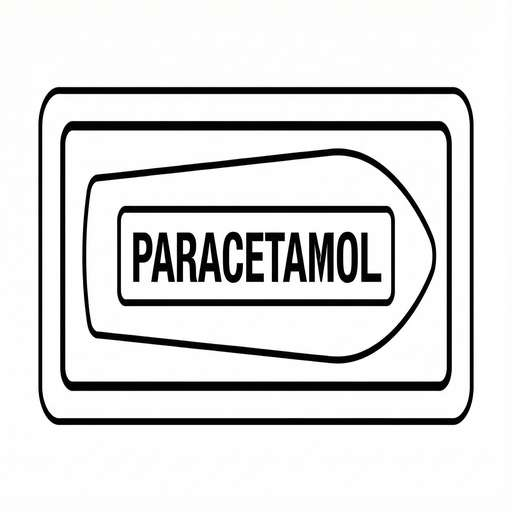

Generating PDF...
🕊️ End-of-Life Symptoms
Home Care Medication Protocol
1
Morphine
- Morphine Injection _____ mg(_____ ml) or Morphine Buccal _____ mg (_____ ml), when necessary.
- Repeat every 1 hour if not relieved.
- If 3 consecutive doses are needed within 1 hour, inform your palliative care team.
2
Haloperidol
- Haloperidol Injection _____ mg (_____ ml) or Haloperidol Buccal _____ mg (_____ tab).
- _____ times every _____ hours + PRN (when necessary).
- Repeat every 1 hour if not relieved.
- If 3 consecutive doses are needed, inform your palliative care team.
3
Buscopan

- Buscopan Injection _____ mg (_____ mL).
- _____ times every _____ hours + PRN (when necessary).
- Repeat every 1 hour if not relieved.
- If 3 consecutive doses are needed, inform your palliative care team.
4
Seizure/Agitation
- Midazolam Buccal _____ mg (_____ ml) or Lorazepam Buccal _____ mg(_____ tab) via syringe.
- Repeat every _____ min if not relieved.
- If 3 consecutive doses are needed every _____ min, inform your palliative care team.
5
Paracetamol Suppository

- Insert Paracetamol Suppository _____ mg via rectum.
- Repeat every _____ hours if fever or shivering persists.
- If 3 consecutive doses are needed, inform your palliative care team.
End-of-Life Symptom Management
Home Care Medication Protocol
①

- Morphine Injection _____ mg(_____ ml) or Morphine Buccal _____ mg (_____ ml), when necessary.
- Repeat every 1 hour if not relieved.
- If 3 doses needed in 1 hour, inform palliative team.
②

- Haloperidol Injection _____ mg (_____ ml) or Haloperidol Buccal _____ mg (_____ tab).
- _____ times every _____ hours + PRN.
- Repeat every 1 hour if not relieved.
- If 3 doses needed, inform palliative team.
③
- Buscopan Injection _____ mg (_____ mL).
- _____ times every _____ hours + PRN.
- Repeat every 1 hour if not relieved.
- If 3 doses needed, inform palliative team.
④

- Midazolam Buccal _____ mg (_____ ml) or Lorazepam Buccal _____ mg(_____ tab).
- Repeat every _____ min if not relieved.
- If 3 doses needed, inform palliative team.
⑤
- Insert Paracetamol Suppository _____ mg via rectum.
- Repeat every _____ hours if fever/shivering persists.
- If 3 doses needed, inform palliative team.